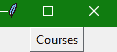
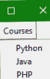

Tkinter Menubutton小部件
在本教程中，我们将介绍 Python 中的 Tkinter 菜单按钮小部件，该小部件用于创建下拉菜单，用户可以点击该菜单查看
这个小部件用于在 Python 应用中提供各种类型的菜单。
需要注意的是，应用中的每个菜单按钮都与一个菜单小部件相关联，作为回报可以在用户点击该菜单按钮时显示该菜单按钮的选项。
Tkinter Menubutton 小部件为用户提供了一个选项，以选择应用中存在的适当选项。
Tkinter Menubutton Widget
Tkinter 菜单按钮小部件的语法如下:
W = Menubutton(master, options)
在上面的语法中，master参数表示父窗口。您可以使用许多options来更改菜单按钮的外观，这些选项被写成逗号分隔的键值对。
Tkinter Menubutton Widget 选项:
以下是 Tkinter 菜单按钮小部件使用的各种选项:
| 选项名称 | 描述 |
|---|---|
activebackground |
该选项指示鼠标悬停在菜单按钮上时菜单按钮的背景颜色。 |
bd |
该选项用于以像素为单位表示边框的宽度。默认值为 2 像素。 |
bitmap |
该选项将被设置为图形内容，该图形内容将被显示给小部件。 |
bg |
该选项用于表示小部件的背景颜色。 |
cursor |
当鼠标悬停在菜单按钮上时，该选项指示光标。 |
activeforeground |
该选项主要表示小部件处于焦点时小部件的字体颜色 |
fg |
该选项代表微件的前景色。 |
direction |
借助该选项，您可以指定方向，以便菜单可以显示到按钮的指定方向。您可以使用左、右或上方相应地放置小部件。 |
disabledforeground |
该选项指示小部件禁用时小部件的文本颜色 |
height |
该选项指示菜单按钮的高度。该高度在文本行的情况下表示文本行数，在图像的情况下表示像素数。 |
image |
该选项指示菜单按钮上显示的图像。 |
higlightcolor |
此选项指示按钮上有焦点时的高亮颜色 |
justify |
该选项用于指示多条文本行的表示方式。左对齐设置为左对齐，右对齐设置为右对齐，中心对齐设置为中心。 |
padx |
该选项指示小部件在水平方向的附加填充。 |
pady |
该选项指示小部件在垂直方向的附加填充。 |
menu |
该选项用于指示与菜单按钮相关联的菜单 |
width |
此选项指定小部件的宽度。对于文本按钮，它以若干字母的形式存在；对于图像按钮，它表示像素 |
Wraplength |
在这种情况下，如果该选项的值是设置为正数，文本行将被包裹，以便适合该长度。 |
state |
由于菜单按钮的正常状态为启用。可以将设置为禁用，使菜单按钮无响应。 |
text |
该选项用于在小部件上指示文本。 |
textvariable |
类字符串变量的控制变量可以与该菜单按钮相关联。如果您将设置控制变量，那么它将改变显示的文本。 |
underline |
此选项主要用于表示小部件的文本中的字符的索引，该字符将被加下划线。索引通常从文本中的零开始。 |
relief |
该选项用于指定边框类型。它的默认值是 REGISTED |
Tkinter 菜单按钮小部件示例
现在让我们看一下 Tkinter 菜单按钮小部件的代码片段:
from tkinter import *
import tkinter
win = Tk()
mbtn = Menubutton(win, text="Courses", relief=RAISED)
mbtn.grid()
mbtn.menu = Menu(mbtn, tearoff = 0)
mbtn["menu"] = mbtn.menu
pythonVar = IntVar()
javaVar = IntVar()
phpVar = IntVar()
mbtn.menu.add_checkbutton(label="Python", variable=pythonVar)
mbtn.menu.add_checkbutton(label="Java", variable=javaVar)
mbtn.menu.add_checkbutton(label="PHP", variable=phpVar)
mbtn.pack()
win.mainloop()
上述代码的输出如下:

你可以自己试试上面的例子。每当您执行上述代码时，您会看到一个窗口上有一个名为课程的 Tkinter 菜单按钮，当您点击它时，它会显示一个如下所示的下拉菜单:

总结:
在本教程中，我们介绍了用于在 Tkinter 应用中创建下拉菜单的 Tkinter Menubutton 小部件。